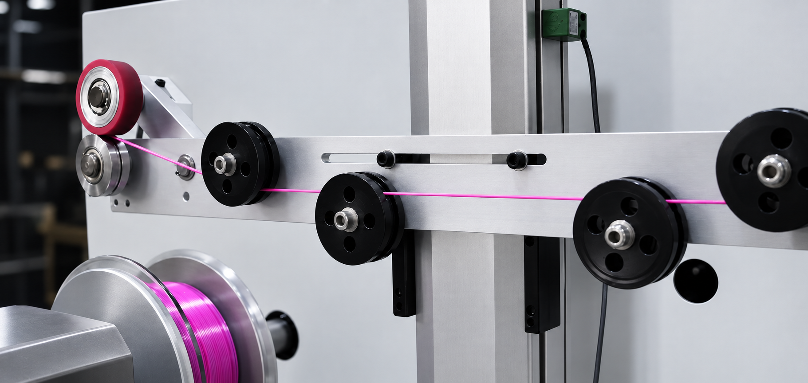

Material Development
Performance starts with the material.
Before a filament reaches the production line, its material behavior has to be understood.
We focus on formulation, processing conditions, extrusion stability, and print performance to develop materials that behave predictably from spool to finished part.